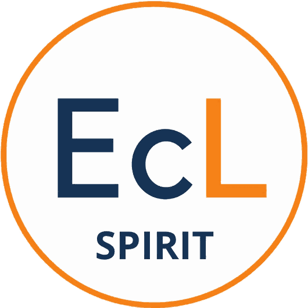

SPIRIT — Évaluation de la synodalité

Évaluer la synodalité d'une pratique ecclésiale

Évaluer la synodalité d'une pratique ecclésiale
Ce nom servira à retrouver l'évaluation et à titrer le document final.
Pilier 1
Les pistes de progression personnalisées sont en cours de développement. En attendant, des phrases issues du Document final du Synode — validées par un panel de 50 théologiens et théologiennes — sont proposées comme pistes de réflexion dans le PDF (dernière page).
Vous n'avez pas encore d'évaluation enregistrée. Les évaluations terminées apparaîtront ici.
Le Document final du Synode sur la synodalité (2024) présente la communion, la participation et la mission comme trois pierres angulaires (§ 142). Il nous invite également à « construire, de manière synodale, des formes et des procédures efficaces de rendre-compte et d'évaluation » (§ 101).
SPIRIT est né de cet appel. Le nom signifie Synodalité des Pratiques : Indicateurs pour le Renouveau, l'Implémentation et la Transformation.
En 15 minutes, l'outil SPIRIT aide à mesurer le caractère synodal d'une pratique ecclésiale, qu'il s'agisse d'une activité ponctuelle, d'un projet ou d'un parcours, ou encore de la dynamique d'un groupe. En répondant à un questionnaire sur 14 piliers issus du Document final du Synode, vous obtenez un diagnostic visuel qui montre où vous en êtes dans votre démarche synodale et les pistes possibles de progression.
Les 14 piliers de SPIRIT, répartis selon les trois pierres angulaires de la synodalité, ont été validés par un panel de 50 théologiens et théologiennes du monde entier selon la méthode Delphi, qui permet de construire progressivement un consensus scientifique.
Vous choisissez la pratique à évaluer et lui donnez un nom. Pour chacun des 14 piliers, répartis selon les 3 pierres angulaires de la synodalité (communion, participation et mission), vous indiquez s'il est solidement établi, en chantier, à bâtir ou non applicable. Des questions vous aident dans votre réflexion. Vous n'avez pas à répondre à chacune d'entre elles, mais vous évaluez l'ensemble du pilier. Au terme, l'application génère un diagnostic visuel, que vous pouvez exporter en PDF. Ce diagnostic individuel peut contribuer à une réflexion collective. Le PDF inclut un rapport détaillé d'évaluation pour chacun des piliers ainsi que des pistes possibles de progression. Des références au Document final y sont proposées pour chaque pilier.
The Final Document of the Synod on Synodality (2024) presents communion, participation and mission as three cornerstones (§ 142). It also invites us to develop "effective forms and processes of accountability and evaluation in a synodal way" (§ 101). SPIRIT was born out of this call. The name stands for Synodal Practices Indicators for Renewal, Implementation and Transformation.
In just 15 minutes, the SPIRIT tool helps assess the synodal character of an ecclesial practice: a one-time activity, a project or program, or the dynamics of a group. By answering a questionnaire based on 14 pillars drawn from the Final Document of the Synod on Synodality (2024), you receive a visual assessment showing where you are in your synodal journey and possible areas for progress.
The 14 SPIRIT pillars, organized according to the three cornerstones of synodality, were validated by a panel of 50 theologians from around the world using the Delphi method, a structured research process that progressively builds scientific consensus among experts.
You choose the practice you wish to assess and give it a name. For each of the 14 pillars, organized according to the three cornerstones of synodality (communion, participation and mission) you indicate whether it is well established, under development, to be built or not applicable. Guiding questions are provided to support your reflection. You do not need to answer every question; rather, you assess the pillar as a whole. At the end of the process, the application generates a visual assessment, which you can export as a PDF. The PDF includes a detailed evaluation report for each pillar, along with possible pathways for progress. References to the Final Document of the Synod on Synodality are also provided for each pillar.
SPIRIT est un projet de l'EcclesiaLab, un laboratoire de théologie au service de la transformation de l'Église catholique en Europe francophone et au Québec. Fondé en 2022 et rattaché à l'Université catholique de Louvain (UCLouvain), l'EcclesiaLab cherche à faire dialoguer la rigueur académique et les réalités vécues sur le terrain pour comprendre, outiller et soutenir les acteurs de la transformation ecclésiale.
EcclesiaLab développe d'autres outils au service des communautés chrétiennes, comme le Radar théologique et une cartographie des lieux d'Église innovants et inspirants. Retrouvez l'ensemble de ses travaux et outils sur ecclesialab.org.
SPIRIT is a project of EcclesiaLab, a theology laboratory dedicated to supporting the transformation of the Catholic Church in French-speaking Europe and Québec. Founded in 2022 and affiliated with the Catholic University of Louvain (UCLouvain), EcclesiaLab seeks to bring academic rigor into dialogue with lived realities in the field in order to understand, equip and support those engaged in ecclesial transformation.
EcclesiaLab is developing other tools to support Christian communities, including the Theological Radar and a mapping platform of innovative and inspiring Church initiatives. Discover all of EcclesiaLab's projects, research, and tools on ecclesialab.org.
En 15 minutes, l'outil SPIRIT aide à mesurer le caractère synodal d'une pratique ecclésiale : activité ponctuelle, projet ou parcours, dynamique d'un groupe. En répondant à un questionnaire sur 14 piliers issus du Document final du Synode sur la synodalité (2024), vous obtenez un diagnostic visuel qui montre où vous en êtes dans votre démarche synodale et les pistes possibles de progression.
Évaluer avec SPIRIT ne signifie pas juger, mais discerner et faire grandir. Vos données sont conservées uniquement sur votre téléphone. À vous de jouer !
In just 15 minutes, the SPIRIT tool helps assess the synodal character of an ecclesial practice: a one-time activity, a project or program, or the dynamics of a group. By answering a questionnaire based on 14 pillars drawn from the Final Document of the Synod on Synodality (2024), you receive a visual assessment showing where you are in your synodal journey and possible areas for growth.
Evaluating with SPIRIT does not mean judging, but rather discerning and fostering growth. Your data is stored only on your phone. It's your turn!
Vous choisissez la pratique à évaluer et lui donnez un nom. Pour chacun des 14 piliers, répartis selon les 3 pierres angulaires de la synodalité (communion, participation et mission), vous indiquez s'il est solidement établi, en chantier, à bâtir ou non applicable. Des questions vous aident dans votre réflexion. Vous n'avez pas à répondre à chacune d'entre elles, mais vous évaluez l'ensemble du pilier.
Au terme, l'application génère un diagnostic visuel, que vous pouvez exporter en PDF. Ce diagnostic individuel peut contribuer à une réflexion collective. Le PDF inclut un rapport détaillé d'évaluation pour chacun des piliers ainsi que des pistes possibles de progression. Des références au Document final y sont proposées pour chaque pilier.
You choose the practice you wish to assess and give it a name. For each of the 14 pillars, organized according to the three cornerstones of synodality (communion, participation and mission) you indicate whether it is well established, under development, to be built or not applicable. Guiding questions are provided to support your reflection. You do not need to answer every question; rather, you assess the pillar as a whole.
At the end of the process, the application generates a visual assessment, which you can export as a PDF. The PDF includes a detailed evaluation report for each pillar, along with possible pathways for progress. References to the Final Document of the Synod on Synodality are also provided for each pillar.